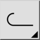
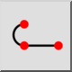

Toolbar / Icon:


Menu: Draw > Polyline > Draw Polyline
Shortcut: P, L
Commands: polyline | pl
This tool lets you draw polylines. A polyline is a continuous line formed
from one or more connected line or arc segments.
Please note that it is almost always more convenient to use the regular
line and arc tools to draw a new polyline. The loosely connected line and arc
segments can then be converted into a polyline entity using the "Create
Polyline from Segments" tool.
If the polyline contains arc segments, you can tick the "Arc" check box and enter the arc radius in the options tool bar when setting the endpoint of an arc segment. The arc will connect smoothly (tangential) to the last segment.